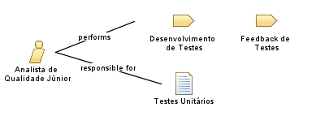

| Role: Analista de Qualidade Júnior |
| |
 |
| Responsável por seguir os roteiros de testes unitários, repassar os resultados e auxiliar o analista de qualidade na coleta de informações dos testes. |
| Role Sets: Equipe de BD, Equipe de POO |
|
Relationships
 |
| Categories |
|
| Primary Performs |
|
| Additionally Performs |
|
Main Description
|
Os Analistas de Qualidade Júnior terão a responsabilidade de criar cenários de teste unitário, propostos pelo Analista de
Qualidade, para verificar a integridade do que foi desenvolvido por sua devida equipe. Devem documentar e reportar os
resultados ao Analista de Qualidade. |
|